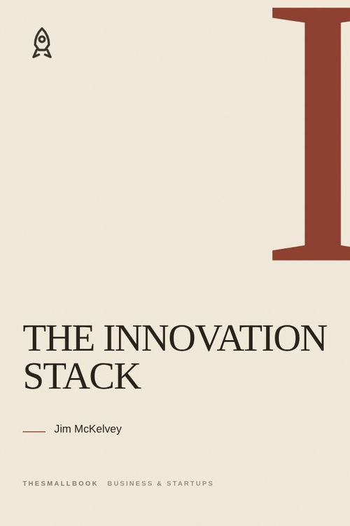

Library › Authors › Jim McKelvey
Books by Jim McKelvey
Jim McKelvey has one book in the library. Every book here is read down to the big idea, the lessons, the lines worth keeping and the actions worth taking. Start with the summary, then buy the full book if it earns a place on your shelf.

The Innovation Stack
2020 · 11 min · 8 lessons
Jim McKelvey argues that the businesses which create new markets solve a series of interlocking problems, and the stack is what makes them hard to copy.
Square began because McKelvey could not accept a card at an art fair, and every solution created the next problem. The stack is the set of inventions that accumulate: the free reader, the pricing, the risk model, the device. A competitor can copy any single layer and cannot copy the whole, because the whole only makes sense as a sequence. The book is a defence of solving problems in order rather than importing a formula.
Lessons in the summary
- Copy or Invent
- Why Big Companies Struggle
- The First Refusal
- The Stack Builds Itself
- Why Copying Fails
- The Survivor's Stack
- Squaring the Square
- What the Stack Is For
Lines worth keeping
- The stack is the invention. The product is the visible layer.
- Copying one layer of a stack does not work.
- Desperation produces invention, and comfort does not.
Questions Jim McKelvey helps answer
Read nearby authors next
- Devdutt Pattanaik 5 books
- Rashmi Bansal 5 books
- Robin Sharma 5 books
- Chetan Bhagat 4 books
- Seth Godin 4 books
- Alex Hormozi 3 books
- Gurcharan Das 3 books
- Nir Eyal 3 books
Questions Jim McKelvey helps answer
Where should I start with Jim McKelvey? Start with The Innovation Stack: Jim McKelvey argues that the businesses which create new markets solve a series of interlocking problems, and the stack is what makes them hard to copy.